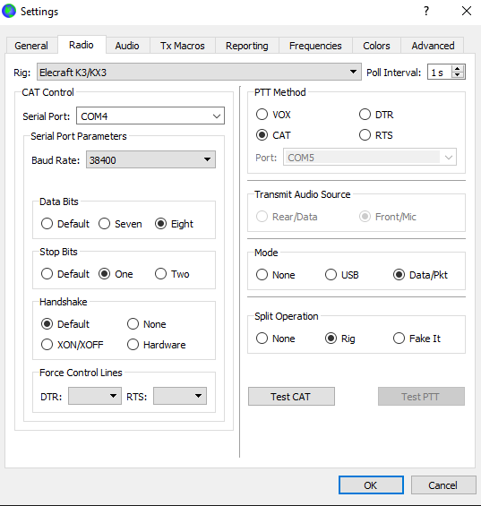

Mike,
That did it I’m back in the fray…!
Thank you so much. I tried Googling this info, and kept finding tons of generic info. But these specific settings turned the TEST CAT button green.
I’m cc.ing the groups in case one of you makes the same mistake I did. The only difference here is my K3 serial port is COM3
Vy 73,
Steve
ps. At your recommendation, I will make screen shots of all the configuration settings and save them in my “FT8” file.
From: Mike Flowers <mike.flowers@gmail.com>
Sent: Friday, May 24, 2024 3:33 PM
To: 'Steve Jones' <n6sj@earthlink.net>
Subject: RE: [NCDXC Chat] WSJT-X FILE/SETTINGS/RADIO Selections for Elecraft K3
I found this online …

From: Chat <chat-bounces@ncdxc.org> On Behalf Of Steve Jones via Chat
Sent: Friday, May 24, 2024 15:31
To: NCDXC Discussion List <chat@ncdxc.org>; main@nccc.groups.io
Subject: [NCDXC Chat] WSJT-X FILE/SETTINGS/RADIO Selections for Elecraft K3
Importance: High
For any of you running FT8 on an Elecraft K3, I need the WSJT-XFILE/SETTINGS/RADIO Selections. I cannot get the CAT connection enabled.
73,
Steve
N6SJ
From: Steve Jones <n6sj@earthlink.net>
Sent: Friday, May 24, 2024 2:47 PM
To: NCDXC Discussion List <chat@ncdxc.org>; main@nccc.groups.io
Subject: NEED FT8 HELP!
Importance: High
To all FT8 gurus!
I somehow hit the wrong “reset” button on my WSJT-X and now cannot get the program talking to my Elecraft K3.
I did not change anything on the rig.
I hit a reset button on the WSJT-X screen, thinking I was resetting the view for the spectrum display.
I have tried re-configuring the WSJT-X but keep getting this message when I try the TEST CAT connection to the rig.
Any suggestions?
73,
Steve
N6SJ